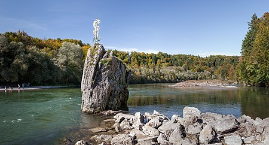

Der Georgenstein, früher auch Georgstein oder Georgenfels,
ist ein großer Felsblock im Flussbett der Isar östlich von Baierbrunn
im Landkreis München, der rund fünf Meter hoch aus dem Wasser ragt.
Der Stein stellte zur Zeit der Flößerei auf der Isar
ein gefürchtetes Hindernis dar.

Dieser Abschnitt der Isar, der bereits zum Unterlauf des Flusses gehört,
weist einige namenlose Kiesinseln rund 60 Meter flussabwärts und
150 Meter flussaufwärts des Steins auf, zwischen Flusskilometer 164,6
(Zusammenfluss von freier Isar und Isarkanal nördlich des Kraftwerkes Mühltal)
und Flusskilometer 162,5 (Baierbrunner Wehr), deren Betreten während
der Brutzeit kiesbrütender Vogelarten wie des Flussregenpfeifers
und des Flussuferläufers verboten ist.
[...] Continue Reading.